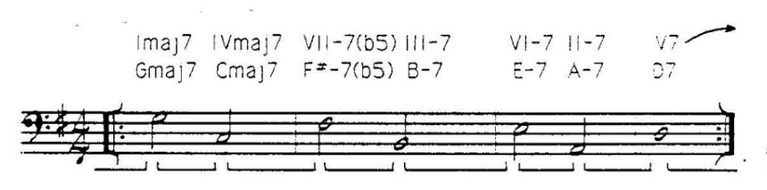
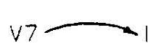
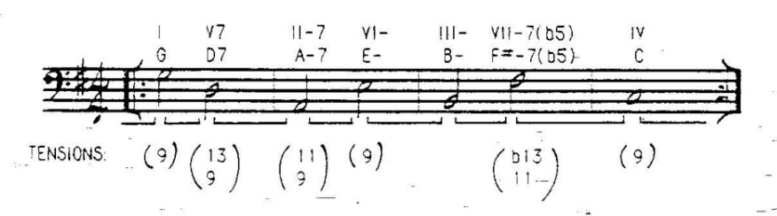
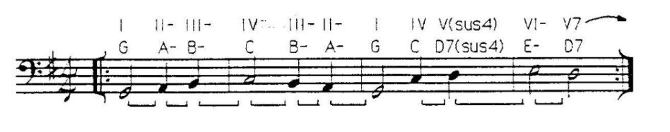
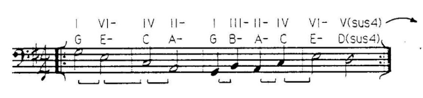
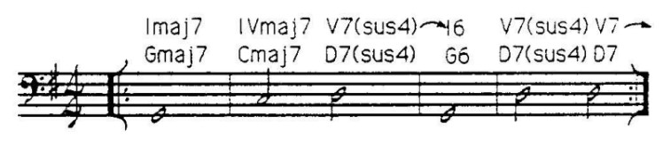
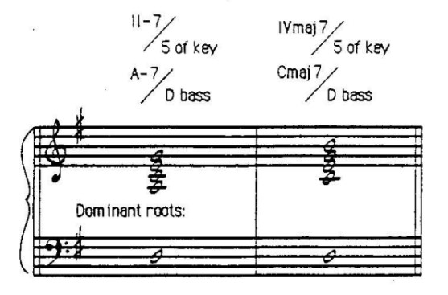
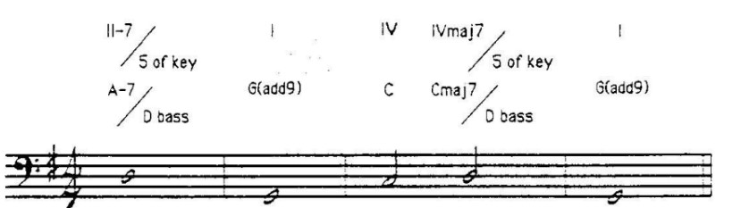
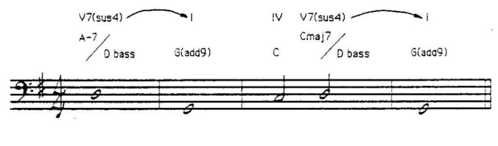
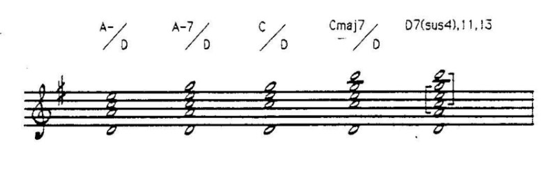

Armonía Diatónica
Cualquier acorde diatónico puede progresar hacia cualquier otro acorde diatónico. La clave está en la relación entre las notas fundamentales de los acordes, conocida como movimiento de la raíz. Existen cuatro categorías principales de este movimiento:
1. Movimientos Descendentes en Quintas: Este es el movimiento de raíz diatónica más fuerte, también conocido como el ciclo de quintas.
De V7 a I es el movimiento de raíz diatónica más fuerte en la tonalidad, por lo tanto, recibe un símbolo de análisis especial. La flecha siempre se usará para mostrar la resolución dominante descendiendo una quinta justa.
2. El movimiento de raíz descendente en una 4ta diatónica también es fuerte, aunque no tan fuerte como el movimiento de raíz descendente en una 5ta diatónica.
3. El movimiento de raíz por grados conjuntos es un poco más sutil que el movimiento de raíz por 4tas y 5tas.
4. El otro movimiento de raíz diatónica es descendente o ascendente en terceras. El movimiento descendente es más común que el ascendente.
Al revisar todos los ejemplos anteriores, ten en cuenta que se repiten. Si se busca un punto final, el mejor acorde final será el acorde de I. El acorde de I puede ser seguido por cualquier otro acorde porque representa un punto de llegada armónica.
Acordes V7(SUS 4): El acorde V7(sus4) se construye generalmente en el grado dominante de la tonalidad.
La fuerza de la resolución dominante radica en el movimiento de raíz descendente de una quinta justa. Dado que el acorde V7(sus4) no contiene un tritono, su función diatónica depende del contexto.
Otra observación respecto al acorde V7(sus4) se puede hacer si la estructura se categoriza como una estructura superior subdominante (ya que el tritono no está presente). Los acordes suenan subdominantes, pero la raíz es dominante.
Los dos acordes anteriores contienen una estructura superior con sonido subdominante y el grado dominante de la tonalidad como su raíz.
Estos acordes son comunes en melodías contemporáneas.
El II-7 sobre el 5 de la tonalidad y el IVmaj7 sobre el 5 de la tonalidad son ambas versiones sutiles del V7(sus4) y deben ser analizadas como tal.
El II- (II-7) sobre el 5 de la tonalidad y el IV (IVmaj7) sobre el 5 de la tonalidad pueden ser vistos como estructuras de acordes derivadas de la estructura extendida del V7(sus4).
